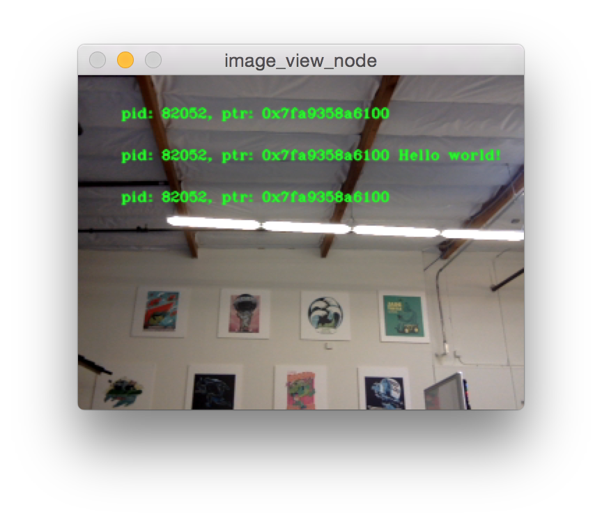
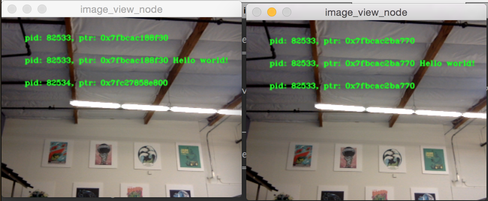

设置高效的进程内通信
背景
ROS应用程序通常由一系列独立的“节点”组成，每个节点执行特定的任务，并与系统的其他部分解耦。这促进了故障隔离、更快的开发、模块化和代码重用，但通常会以性能为代价。在最初开发ROS 1后，人们意识到需要有效地组合节点，并因此开发了Nodelets。在ROS 2中，我们旨在改进Nodelets的设计，解决一些需要对节点进行重组的根本性问题。
在这个演示中，我们将重点介绍如何手动组合节点，通过分别定义节点，但在不更改节点的代码或限制其功能的情况下，将它们组合在不同的进程布局中。
安装演示
详细了解安装ROS 2的方法，请参阅:doc:安装说明。
如果你是通过包安装ROS 2，请确保已安装``ros-humble-intra-process-demo``。如果你从存档文件下载或从源代码构建ROS 2，它已经包含在安装中。
运行和理解演示
有几个不同的演示：其中一些是玩具问题，旨在突出显示进程内通信功能的特点，另一些是端到端示例，使用OpenCV，并演示了将节点重新组合成不同配置的能力。
两个节点管道演示
此演示旨在展示进程内发布/订阅连接在使用``std::unique_ptr``进行发布和订阅时可以实现零拷贝传输。
首先，让我们来看一下源代码:
#include <chrono>
#include <cinttypes>
#include <cstdio>
#include <memory>
#include <string>
#include <utility>
#include "rclcpp/rclcpp.hpp"
#include "std_msgs/msg/int32.hpp"
using namespace std::chrono_literals;
// Node that produces messages.
struct Producer : public rclcpp::Node
{
Producer(const std::string & name, const std::string & output)
: Node(name, rclcpp::NodeOptions().use_intra_process_comms(true))
{
// Create a publisher on the output topic.
pub_ = this->create_publisher<std_msgs::msg::Int32>(output, 10);
std::weak_ptr<std::remove_pointer<decltype(pub_.get())>::type> captured_pub = pub_;
// Create a timer which publishes on the output topic at ~1Hz.
auto callback = [captured_pub]() -> void {
auto pub_ptr = captured_pub.lock();
if (!pub_ptr) {
return;
}
static int32_t count = 0;
std_msgs::msg::Int32::UniquePtr msg(new std_msgs::msg::Int32());
msg->data = count++;
printf(
"Published message with value: %d, and address: 0x%" PRIXPTR "\n", msg->data,
reinterpret_cast<std::uintptr_t>(msg.get()));
pub_ptr->publish(std::move(msg));
};
timer_ = this->create_wall_timer(1s, callback);
}
rclcpp::Publisher<std_msgs::msg::Int32>::SharedPtr pub_;
rclcpp::TimerBase::SharedPtr timer_;
};
// Node that consumes messages.
struct Consumer : public rclcpp::Node
{
Consumer(const std::string & name, const std::string & input)
: Node(name, rclcpp::NodeOptions().use_intra_process_comms(true))
{
// Create a subscription on the input topic which prints on receipt of new messages.
sub_ = this->create_subscription<std_msgs::msg::Int32>(
input,
10,
[](std_msgs::msg::Int32::UniquePtr msg) {
printf(
" Received message with value: %d, and address: 0x%" PRIXPTR "\n", msg->data,
reinterpret_cast<std::uintptr_t>(msg.get()));
});
}
rclcpp::Subscription<std_msgs::msg::Int32>::SharedPtr sub_;
};
int main(int argc, char * argv[])
{
setvbuf(stdout, NULL, _IONBF, BUFSIZ);
rclcpp::init(argc, argv);
rclcpp::executors::SingleThreadedExecutor executor;
auto producer = std::make_shared<Producer>("producer", "number");
auto consumer = std::make_shared<Consumer>("consumer", "number");
executor.add_node(producer);
executor.add_node(consumer);
executor.spin();
rclcpp::shutdown();
return 0;
}
通过查看 main 函数，您可以看到我们有一个生产者节点和一个消费者节点，我们将它们添加到一个单线程执行器中，然后调用 spin 函数。
如果您查看 Producer 结构体中的“生产者”节点实现，您会发现我们创建了一个在“number”主题上发布消息的发布者和一个定时器，该定时器周期性地创建一个新的消息，打印出它在内存中的地址和其内容的值，然后将其发布出去。
``consumer``节点相对简单，可以在``Consumer``结构体中看到其实现，它只订阅"number"主题，并打印出接收到的消息的地址和值。
预期结果是生产者将打印出地址和值，而消费者将打印出匹配的地址和值。这证明了进程内通信确实起作用，并且至少对于简单的图形，避免了不必要的复制。
让我们通过执行``ros2 run intra_process_demo two_node_pipeline``可执行文件来运行演示（不要忘记先执行设置文件）：
$ ros2 run intra_process_demo two_node_pipeline
Published message with value: 0, and address: 0x7fb02303faf0
Published message with value: 1, and address: 0x7fb020cf0520
Received message with value: 1, and address: 0x7fb020cf0520
Published message with value: 2, and address: 0x7fb020e12900
Received message with value: 2, and address: 0x7fb020e12900
Published message with value: 3, and address: 0x7fb020cf0520
Received message with value: 3, and address: 0x7fb020cf0520
Published message with value: 4, and address: 0x7fb020e12900
Received message with value: 4, and address: 0x7fb020e12900
Published message with value: 5, and address: 0x7fb02303cea0
Received message with value: 5, and address: 0x7fb02303cea0
[...]
你会注意到一件事，消息大约每秒钟传递一次。这是因为我们告诉定时器大约每秒触发一次。
你可能已经注意到第一条消息（值为``0``）没有对应的"Received message ..."行。这是因为发布/订阅是"尽力而为"的，我们没有启用任何"锁存"行为。这意味着如果发布者在建立订阅之前发布一条消息，订阅将不会接收到该消息。这种竞争条件可能导致前几条消息丢失。在这种情况下，由于它们每秒只出现一次，通常只会丢失第一条消息。
最后，你可以看到具有相同值的"Published message..."和"Received message ..."行也具有相同的地址。这表明接收到的消息的地址与发布的消息相同，并且它不是一个副本。这是因为我们使用``std::unique_ptr``进行发布和订阅，它允许消息的所有权在系统中安全地移动。你也可以使用``const &``和``std::shared_ptr``进行发布和订阅，但在这种情况下不会进行零拷贝。
循环管道示例
这个示例与之前的示例类似，但是不同的是，生产者在每次迭代中不会创建新的消息，而是始终使用同一个消息实例。通过在图中创建一个循环，并在旋转执行器之前通过外部方式使其中一个节点发布消息，可以实现这一点：
https://github.com/ros2/demos/blob/humble/intra_process_demo/src/cyclic_pipeline/cyclic_pipeline.cpp
#include <chrono>
#include <cinttypes>
#include <cstdio>
#include <memory>
#include <string>
#include <utility>
#include "rclcpp/rclcpp.hpp"
#include "std_msgs/msg/int32.hpp"
using namespace std::chrono_literals;
// This node receives an Int32, waits 1 second, then increments and sends it.
struct IncrementerPipe : public rclcpp::Node
{
IncrementerPipe(const std::string & name, const std::string & in, const std::string & out)
: Node(name, rclcpp::NodeOptions().use_intra_process_comms(true))
{
// Create a publisher on the output topic.
pub = this->create_publisher<std_msgs::msg::Int32>(out, 10);
std::weak_ptr<std::remove_pointer<decltype(pub.get())>::type> captured_pub = pub;
// Create a subscription on the input topic.
sub = this->create_subscription<std_msgs::msg::Int32>(
in,
10,
[captured_pub](std_msgs::msg::Int32::UniquePtr msg) {
auto pub_ptr = captured_pub.lock();
if (!pub_ptr) {
return;
}
printf(
"Received message with value: %d, and address: 0x%" PRIXPTR "\n", msg->data,
reinterpret_cast<std::uintptr_t>(msg.get()));
printf(" sleeping for 1 second...\n");
if (!rclcpp::sleep_for(1s)) {
return; // Return if the sleep failed (e.g. on :kbd:`ctrl-c`).
}
printf(" done.\n");
msg->data++; // Increment the message's data.
printf(
"Incrementing and sending with value: %d, and address: 0x%" PRIXPTR "\n", msg->data,
reinterpret_cast<std::uintptr_t>(msg.get()));
pub_ptr->publish(std::move(msg)); // Send the message along to the output topic.
});
}
rclcpp::Publisher<std_msgs::msg::Int32>::SharedPtr pub;
rclcpp::Subscription<std_msgs::msg::Int32>::SharedPtr sub;
};
int main(int argc, char * argv[])
{
setvbuf(stdout, NULL, _IONBF, BUFSIZ);
rclcpp::init(argc, argv);
rclcpp::executors::SingleThreadedExecutor executor;
// Create a simple loop by connecting the in and out topics of two IncrementerPipe's.
// The expectation is that the address of the message being passed between them never changes.
auto pipe1 = std::make_shared<IncrementerPipe>("pipe1", "topic1", "topic2");
auto pipe2 = std::make_shared<IncrementerPipe>("pipe2", "topic2", "topic1");
rclcpp::sleep_for(1s); // Wait for subscriptions to be established to avoid race conditions.
// Publish the first message (kicking off the cycle).
std::unique_ptr<std_msgs::msg::Int32> msg(new std_msgs::msg::Int32());
msg->data = 42;
printf(
"Published first message with value: %d, and address: 0x%" PRIXPTR "\n", msg->data,
reinterpret_cast<std::uintptr_t>(msg.get()));
pipe1->pub->publish(std::move(msg));
executor.add_node(pipe1);
executor.add_node(pipe2);
executor.spin();
rclcpp::shutdown();
return 0;
}
与之前的演示不同，此演示只使用一个节点，使用不同的名称和配置实例化两次。图的结构为“pipe1” -> “pipe2” -> “pipe1”... 形成循环。
代码行“pipe1->pub->publish(msg);”启动了该过程，但之后消息通过每个节点在自己的订阅回调中调用publish来来回传递。
这里的期望是节点之间每秒传递消息一次，每次递增消息的值。由于消息作为“unique_ptr”发布和订阅，开始时创建的同一消息会不断使用。
为了测试这些期望，让我们运行它：
$ ros2 run intra_process_demo cyclic_pipeline
Published first message with value: 42, and address: 0x7fd2ce0a2bc0
Received message with value: 42, and address: 0x7fd2ce0a2bc0
sleeping for 1 second...
done.
Incrementing and sending with value: 43, and address: 0x7fd2ce0a2bc0
Received message with value: 43, and address: 0x7fd2ce0a2bc0
sleeping for 1 second...
done.
Incrementing and sending with value: 44, and address: 0x7fd2ce0a2bc0
Received message with value: 44, and address: 0x7fd2ce0a2bc0
sleeping for 1 second...
done.
Incrementing and sending with value: 45, and address: 0x7fd2ce0a2bc0
Received message with value: 45, and address: 0x7fd2ce0a2bc0
sleeping for 1 second...
done.
Incrementing and sending with value: 46, and address: 0x7fd2ce0a2bc0
Received message with value: 46, and address: 0x7fd2ce0a2bc0
sleeping for 1 second...
done.
Incrementing and sending with value: 47, and address: 0x7fd2ce0a2bc0
Received message with value: 47, and address: 0x7fd2ce0a2bc0
sleeping for 1 second...
[...]
你应该在每次迭代中看到不断增加的数字，从42开始...因为42，而且整个时间它重复使用相同的消息，如指针地址所示，它们不会改变，这避免了不必要的拷贝。
图像处理演示
在这个演示中，我们将使用OpenCV来捕获、注释和查看图像。
注解
如果您使用的是 macOS，而这些示例不起作用，或者您收到类似 ddsi_conn_write failed -1 的错误，那么您需要增加系统范围内的 UDP 数据包大小：
$ sudo sysctl -w net.inet.udp.recvspace=209715
$ sudo sysctl -w net.inet.udp.maxdgram=65500
这些更改在重启后将不会保留。
简单的流水线
首先，我们将有一个由三个节点组成的流水线，安排如下：camera_node -> watermark_node -> image_view_node
``camera_node``从计算机上的相机设备``0``读取数据，并在图像上写入一些信息后进行发布。``watermark_node``订阅``camera_node``的输出，并在发布之前添加更多的文本。最后，``image_view_node``订阅``watermark_node``的输出，向图像中添加更多的文本，并使用``cv::imshow``进行可视化。
在每个节点中，发送或接收到的消息的地址都写入图像中。水印节点和图像查看节点设计为在不复制图像的情况下修改图像，因此只要节点在同一进程中，并且图形以上述流水线的方式保持组织，图像上印刻的地址应该都是相同的。
注解
在某些系统上（我们在Linux上遇到过这种情况），打印到屏幕上的地址可能不会改变。这是因为正在重复使用相同的唯一指针。在这种情况下，流水线仍在运行。
通过执行以下可执行文件来运行演示：
ros2 run intra_process_demo image_pipeline_all_in_one
你应该看到类似这样的内容：
你可以通过按下空格键暂停图像的渲染，再次按下空格键可以恢复。你还可以按下 q 或 ESC 键退出。
如果你暂停了图像查看器，你应该能够比较图像上的地址，并看到它们是相同的。
带有两个图像查看器的流水线
现在让我们看一个与上面相似的示例，只是这次有两个图像视图节点。所有节点仍然在同一个进程中，但现在应该会出现两个图像视图窗口。（注意 macOS 用户：你的图像视图窗口可能会重叠在一起）。让我们用以下命令运行它：
ros2 run intra_process_demo image_pipeline_with_two_image_view

与上一个示例一样，你可以使用空格键暂停渲染，再次按下空格键继续。你可以停止更新以检查写入屏幕的指针。
如上面的示例图所示，我们有一个图像，其中所有指针都相同，然后另一个图像的前两个条目与第一个图像的指针相同，但第二个图像的最后一个指针不同。要理解为什么会发生这种情况，请考虑图的拓扑结构：
camera_node -> watermark_node -> image_view_node
-> image_view_node2
camera_node 和 watermark_node 之间的链接可以使用相同的指针而不进行复制，因为只有一个进程内的订阅应将消息传递给该指针。但是，对于 watermark_node 和两个图像视图节点之间的链接，关系是一对多的，因此，如果图像视图节点使用 unique_ptr 回调，那么将不可能将同一指针的所有权分别传递给它们。然而，它可以被传递给其中一个。哪个节点会获得原始指针并没有定义，而是简单地取决于最后被传递的节点。
注意，图像视图节点没有使用``unique_ptr``回调函数进行订阅，而是使用``const shared_ptr``进行订阅。这意味着系统将向两个回调函数提供相同的``shared_ptr``。在处理第一个进程内订阅时，内部存储的``unique_ptr``将被提升为``shared_ptr``。每个回调函数将共享同一消息的所有权。
具有进程间查看器的流水线
还有一件重要的事情需要注意，即在进行进程间订阅时，避免中断进程内的零拷贝行为。为了测试这一点，我们可以运行第一个图像流水线演示程序``image_pipeline_all_in_one``，然后运行一个独立的``image_view_node``实例（不要忘记在终端中加上``ros2 run intra_process_demo``前缀）。大致如下所示：
很难同时暂停两个图像，因此图像可能不会对齐，但需要注意的重要事项是，``image_pipeline_all_in_one``图像视图显示了每个步骤的相同地址。这意味着即使订阅了外部视图，进程内的零拷贝仍然得到保留。您还可以看到进程间图像视图在文本的前两行具有不同的进程 ID，并且独立图像查看器的进程 ID 在第三行文本中。